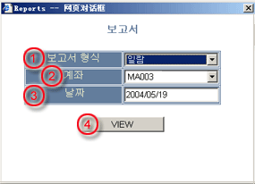
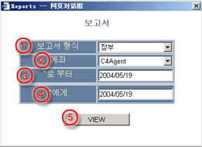

리포트
시스템은 두 유형의 리포트를 제공한다:
사용자는 주 스크린 상에 메뉴로부터의
리포트를 선택함으로써 리포트에 접근할 수 있다:
진술서
진술서는 어떤 특정일 상의 모든 활동과 거래 계좌의 여유 상황을 포함하는 매일 리포트이다. 리포트는 주로 다음처럼 구성되어 있다:
진술서 리포트를 얻기 위해 사용자는 주 스크린 상에 메뉴로부터의 리포트를 선택함으로써 리포트 대화창을 활성화한다. 리포트 대화창에 필요한 정보를 제공한다
| 1 | 리포트 유형 - 진술서를 선택 |

|
| 2 | 계좌 - 진술서 리포트에 대한 거래 계좌 선택 | |
| 3 | 날짜 - 리포트에 대한 거래일 선택 | |
| 4 | 관찰 (View) - 필요시 리포트를 보기 위한 버튼 |
모든 필요한 정보가 채워 지면, VIEW버튼을 누름으로써 리포트 예고창으로 돌아 간다. 리포트 예고창에서, 사용자는 리포트를 프린터로 보내기 위해 선택하면
된다.
원장은 주어진 기간에 거래 계좌의 잔고와 관련 있는 모든 활동을 포함하는 정기 리포트이다. 그러나, 리포트가 계좌의 부동 입장에 대한 어떤 정보를 제공하진 않는다.
원장 리포트를 얻기 위해 사용자는 주 스크린 상에 메뉴로부터의 리포트를 선택함으로써 리포트 대화창을 활성화한다. 리포트 대화창에 필요한 정보를 제공한다
| 1 | 리포트 유형 - 원장을 선택 |

|
| 2 | 계좌 - 리포트에 대한 무역 계좌 선택 | |
| 3 | From - 거래일 개시 리포트 선택 | |
| 4 | To - 거래일 마감 리포트 선택 | |
| 5 | 관찰(View) - 필요시 리포트를 보기 위한 버튼 |
모든 필요한 정보가 채워 지면, VIEW 버튼을 누름으로써 리포트 예고창으로 돌아 간다. 리포트 예고창에서, 사용자는 리포트를
프린터로 보내기 위해 선택하면 된다.